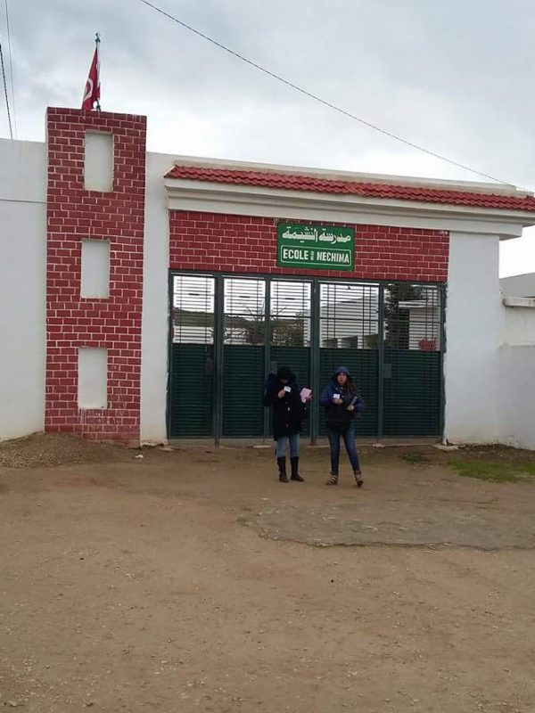
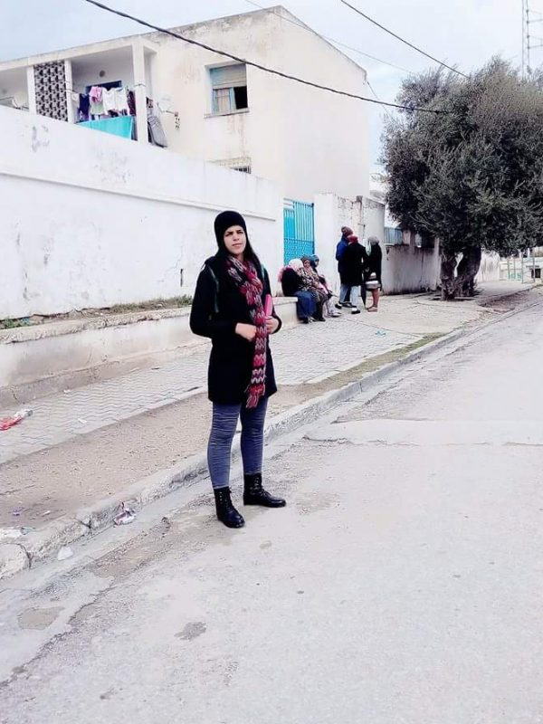
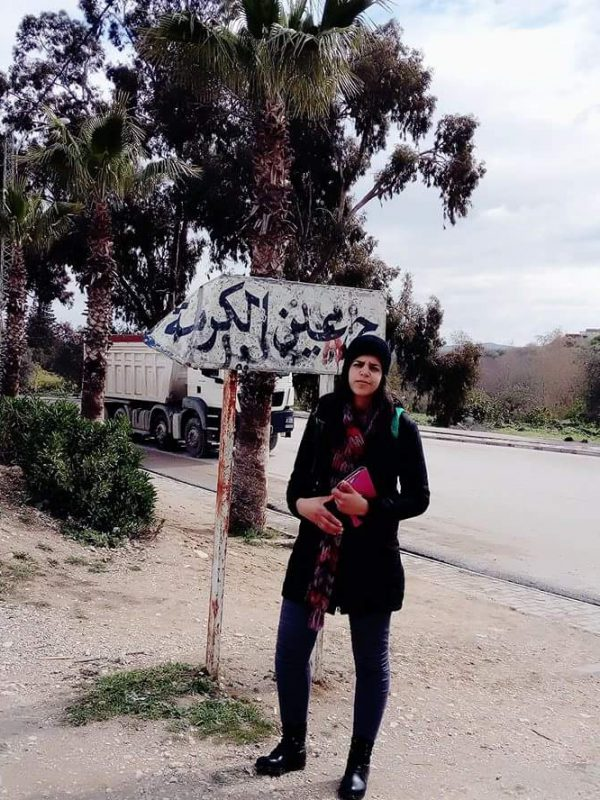
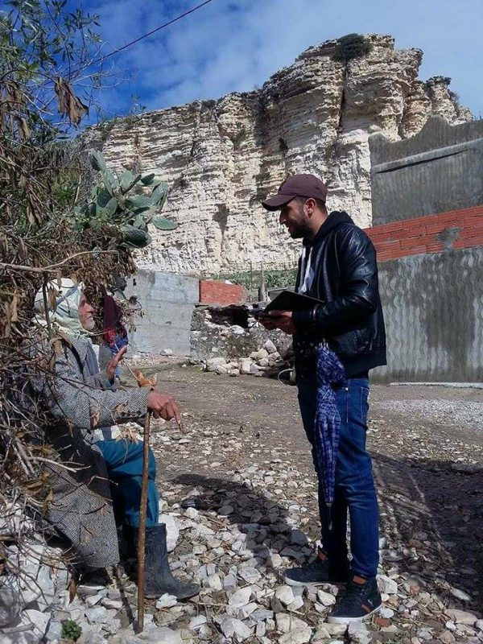

Expertise Dans Plusieurs Pays - Sondage d'Opinion
Notre objectif : être partenaire de votre stratégie marketing dans la région MENA

Notre objectif : être partenaire de votre stratégie marketing dans la région MENA

Bureau d'études de marché pour optimiser votre processus décisionnel en North Africa

Groupe d'experts en sondage et études marketing ayant fait leurs preuves

Nouvellement créée par un groupe d'experts ayant fait leurs preuves dans le domaine des études de marché et du sondage d'opinion, AARC (Arab African Research Center) est un institut de recherche et une société de sondage spécialisée en marketing proposant une panoplie de services de consulting et d'opinion research destinés à vous garantir une meilleure connaissance du marché en Tunisie, Algérie, Libye, Maroc, Égypte et dans toute la région MENA.
Notre dynamisme en tant que market research company nous a permis de développer notre expertise en études marketing dans plusieurs pays d'Afrique du Nord et des pays arabes, tels que : l'Algérie, la Libye, le Maroc, l'Égypte et la Mauritanie.

Au-delà des mesures, des analyses et des constats, notre objectif primordial consiste à formuler des préconisations et des recommandations stratégiques et opérationnelles. Nous visons ainsi à aider nos clients à atteindre leurs objectifs et leurs résultats et à renforcer leur positionnement sur leur marché.

Nous adoptons une approche globale, couvrant le volet stratégique et opérationnel du Marketing, à travers une démarche qui nous offre la capacité de saisir, décrypter et analyser les comportements et nouvelles attentes des marchés tout en proposant des solutions et des alternatives stratégiques susceptibles de permettre à l’entreprise de saisir les opportunités existantes sur le marché.

Le succès d'un projet passe essentiellement par l'implication des gens qui le réalisent. AARC dispose d'une équipe d'experts pluridisciplinaires et multisectoriels, issus de grandes écoles de Marketing et de Management, doués par les études de marché et capables de vous livrer des résultats mesurables grâce à une bonne maîtrise des nouvelles méthodes et techniques de collecte et d'analyse de données.
Les valeurs partenariales que nous partageons au quotidien avec nos clients reposent sur une vision perfectionniste basée essentiellement sur


Une panoplie d'outils pratiques pour vos études de marché
Un moyen de toucher des cibles spécifiques avec une bonne répartition de l'échantillon. L'enquête par téléphone présente l'avantage d'obtenir des réponses en grand nombre.
Explorez nos moyens
Un recueil permettant une profondeur d'investigations. L'entretien face à face favorise les échanges et permet de collecter des informations riches et significatives.
Explorez nos moyens
Un mode de collecte justifié dans certaines situations spécifiques. En dépit de l'avènement de solutions numériques, l'enquête en version papier est encore utilisée dans certains cas.
Explorez nos moyens
Un réseau professionnel et institutionnel de qualité. La valeur des analyses et des recommandations repose essentiellement sur la fiabilité des données collectées
Explorez nos moyens
UUne expertise confirmée dans plusieurs secteurs d’activité
Analyses marketing et conseils stratégiques pour la région MENA
Besoin de comprendre vos clients ou prospects ? Décodez leurs attentes! Les études qualitatives : c'est le moyen le plus rapide pour comprendre votre marché
Explorez nos servicesL’étude de satisfaction n’est pas seulement utile pour identifier les clients mécontents et agir. Bien menée, elle est un véritable outil de management !
Explorez nos servicesPour une étude objective de la qualité de vos services. Le mystery shopping est une technique d’étude qui sert à évaluer la qualité des services que vous offrez.
Explorez nos servicesEtude documentaire est la meilleure connaissance du marché dans lequel vous êtes en train d’évoluer. L’étude documentaire est une des étapes essentielles de l’étude de marché. Elle se matérialise par un travail de collecte des informations préalablement disponibles sur le sujet.
Explorez nos services
Bienvenue sur WordPress. Ceci est votre premier article

Bienvenue sur WordPress. Ceci est votre premier article

Bienvenue sur WordPress. Ceci est votre premier article

Bienvenue sur WordPress. Ceci est votre premier article